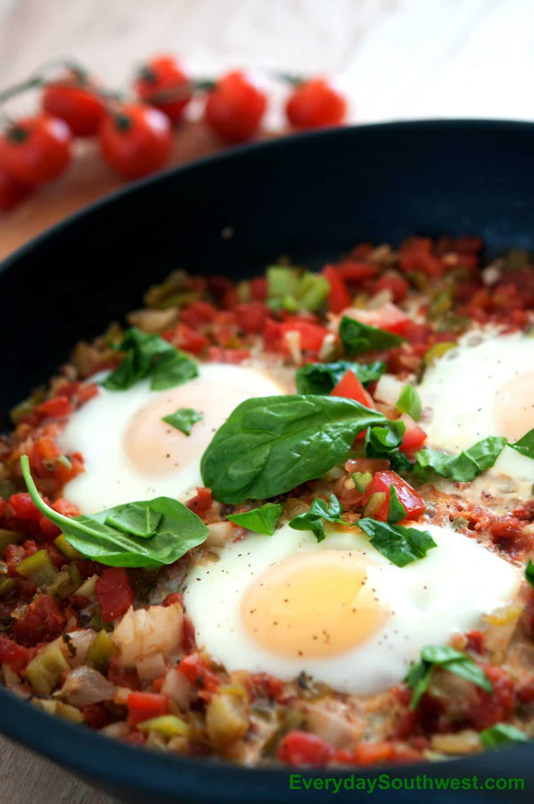

Main Page
Eggs Diablo

Description
With this recipe you will make delicious eggs, perfect for a good breakfast and a good start to your day
Ingredients:
- 1 Tbsp olive oil
- 1 medium onion, chopped
- 1 medium green bell pepper, chopped
- 1 Tbsp minced garlic
- 1 14.5-oz can no-salt-added fire-roasted diced tomatoes, undrained
- 1 8-oz can no-salt-added tomato sauce
- 1/2 tsp crushed red pepper flakes
- 8 eggs
- 2 Tbsp sliced green onions (scallions)
- 8 corn tortillas, warmed
- Salt and black pepper to taste
Steps
- In a large skillet, heat oil over medium heat. Add the chopped onion, pepper, and garlic.
Cook for 3 to 4 minutes, stirring occasionally until vegetables are tender.
Add tomatoes, tomato sauce, and red pepper flakes.
Cook for 5 minutes, or until sauce is bubbling around edges.
- Form a small indentation in the sauce.
Break an egg into a cup and slip into sauce; repeat with remaining eggs.
Cover pan and cook 3 to 5 minutes, or until egg whites are completely set and yolks start to thicken.
- Sprinkle eggs with green onions. Serve with corn tortillas.
Season with salt and pepper.
Done! Now you have before you one of the tastiest ways of eating eggs